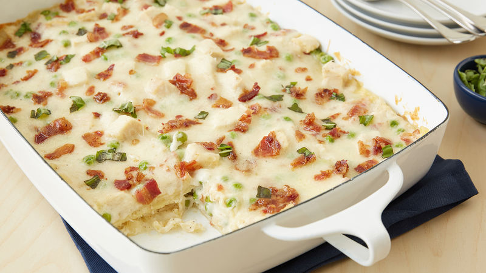

Carbonara Lasagna

An easy lasagna recipe than saves me lots of time.
This recipe is simple and satisfies everyone in the family.
Ingredients
- 9uncooked lasagna noodles
- 10 slices bacon, crisply cooked and crumbled
- 3 tablespoons butter
- 3 cloves garlic, finely chopped
- 3 tablespoons all-purpose flour
- 3/4 teaspoon salt
- 3/4 teaspoon pepper
- 2 cups heavy whipping cream
- 1 1/4 cups Progresso™ chicken broth (from 32-oz container
- 2 cups shredded Italian cheese blend (8 oz)
- 2 cups chopped cooked chicken
- 1 1/2
- cups frozen sweet peas Chopped fresh basil leaves, if desired
Steps
- Heat oven to 350°F. Spray 13x9-inch (3-quart) baking dish with cooking spray. Cook and drain lasagna noodles as directed on package. Reserve 2 tablespoons crumbled bacon for topping after baking.
- Meanwhile, in 2-quart saucepan, melt butter over medium heat. Add garlic; cook about 1 minute, stirring occasionally, until golden. Stir in flour, salt and pepper; cook until thickened.
- Stir in whipping cream and broth; heat to boiling, stirring constantly. Boil and stir 1 minute. Stir in 1 cup of the cheese. Remove from heat.
- Spoon and spread 1/2 cup sauce in bottom of baking dish; top with 3 noodles.
- Add chicken, remaining crumbled bacon and frozen peas to remaining sauce in saucepan. Spread one-third of the sauce mixture (slightly less than 2 cups) over noodles.
- Top with 3 noodles. Repeat with one-third of the sauce mixture and remaining 3 noodles. Top with remaining sauce mixture.
- Cover with foil. Bake 35 minutes; uncover, and sprinkle with remaining 1 cup cheese and reserved bacon. Bake 8 to 10 minutes longer or until heated through and cheese is melted. Let stand 15 minutes before cutting. Sprinkle with chopped basil.